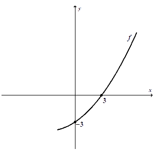

Na rysunku przedstawiony jest fragment wykresu funkcji kwadratowej \(f\).  Osią symetrii paraboli jest
prosta o równaniu \(x=-3\). Rozwiązaniem nierówności \(f(x)\le 0\) jest zbiór
A.\( \langle 0,-3\rangle \)
B.\( \langle -3,3\rangle \)
C.\( \langle -6,3\rangle \)
D.\( \langle -9,3\rangle \)